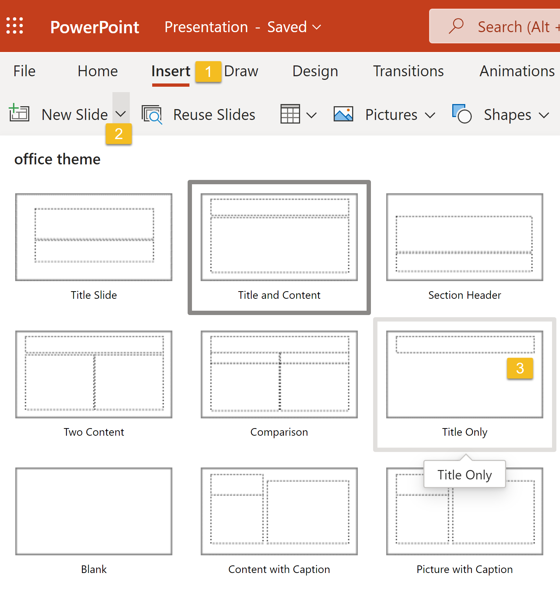

Graphic elements on screenshots
This may seem like a no-brainer, but adding arrows, numbers or other markings to your screenshots can make them more engaging. Make it obvious which details are important and require the user’s attention. Use bright colors to point out important parts so that readers don’t have to peer at your screenshot to understand what button they need to click or what link they need to follow.
- Pointing arrows at an object or circling it works best.

- Pick a color that would stand out from the rest of the image. Choosing the color from the user interface palette will make it not visible.
- Stick to the same color and shape of the mark-up tool — this will keep your marks and notes easily recognizable and the overall style consistent.
- Keep the same selection shape throughout the documentation (e.g. a rectangular selection - do not mix it up with circles)
- Pay attention to proportion and symmetry
- An alternative way of focusing attention on an element is zooming it in. That
works great especially with large screenshots crowded with small details.

- Another useful technique is the highlight, which is supported by some screenshot
tools. This is what it may look like:

- You can also add some step numbers on the screenshot: